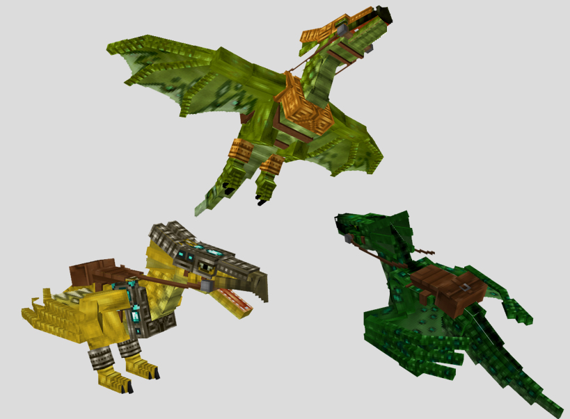
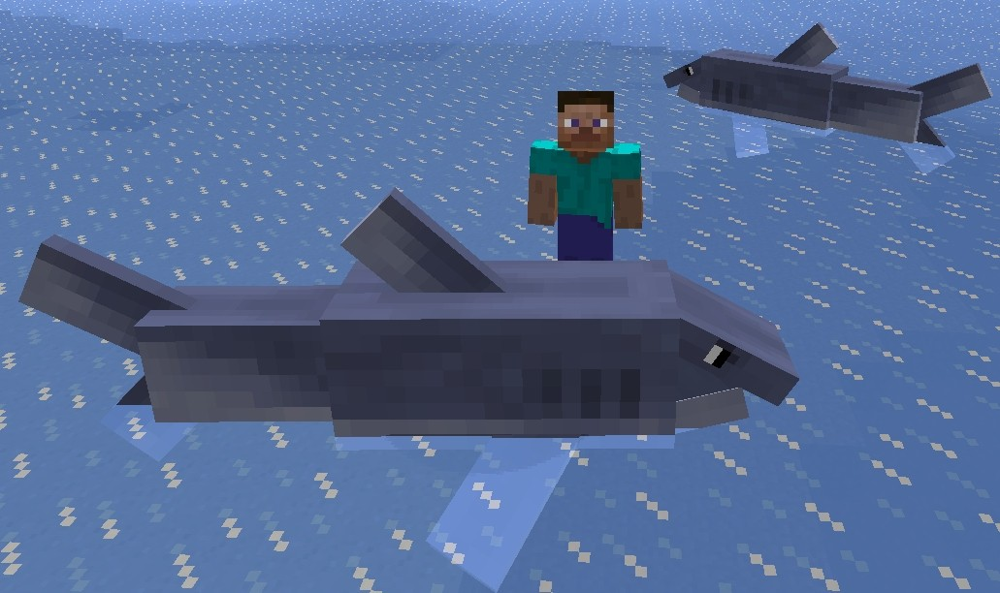
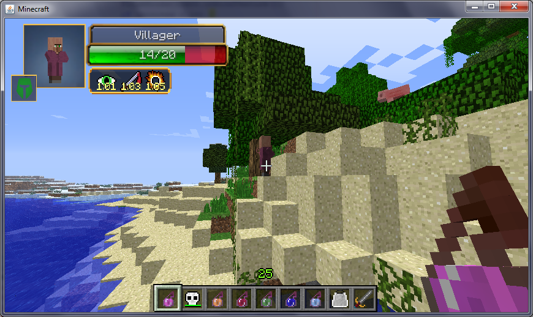

Minecraft
Servers and Mods
Mods
Mo Creatures Mod:
By: DrZharks
Mo Creatures is a mod that adds TONS of new creatures, such as birds,
elephants, ducks, insects, rats, and much more. It even adds more
hostile mobs, like werewolves and ogres. Tamable creature such as
Wyverns and different new
types of horses are added too. For people who
want to jazz up Minecraft with more creatures, this is the perfect mod.

Tropicraft:
By: Cojomax 99
The Tropicraft mod adds a new dimension called the
tropical dimension, fillled with with new creatures, generated
structures, and much. This dimension is related to the tropics, because
it adds seagulls, new villager types, and even fish!
This is a very unique mod that adds lots of cool stuff. This also adds
nets, so you can catch your own fish and make an aquarium!
Damage Indicators:
By: Rich1051414
Damage Indicators is an utility mod, that can show how much
health a creature has out of its total health. It also shows if it is a
player, hostile mob, peaceful mob, or passive mob. Damage Indicators
also shows the status effect of a mob/player. This mod also works with
other mods, so it can show the health of a creature from another mod!
